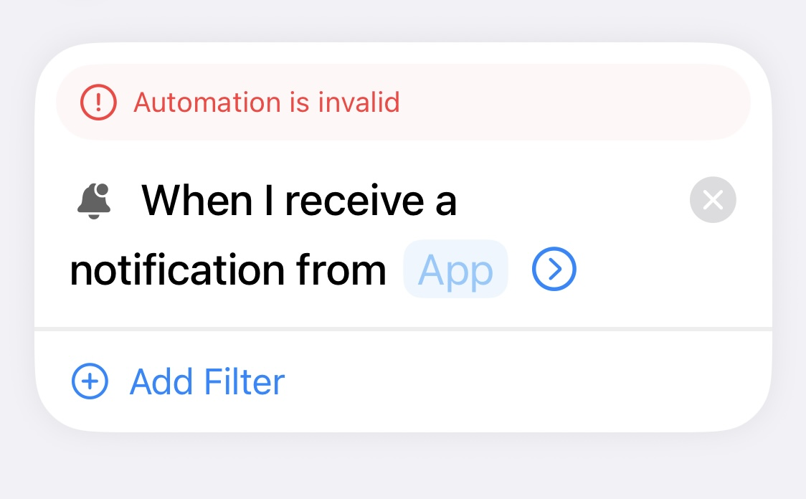
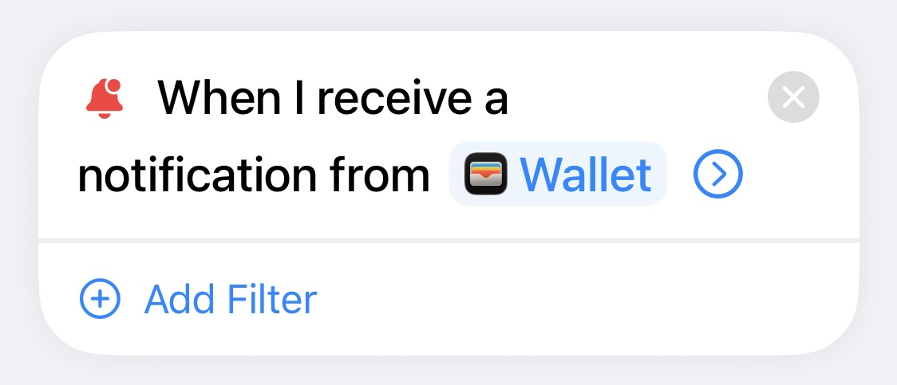
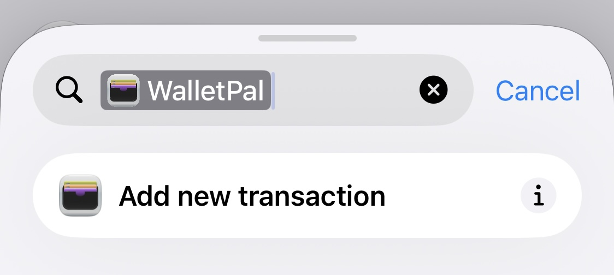
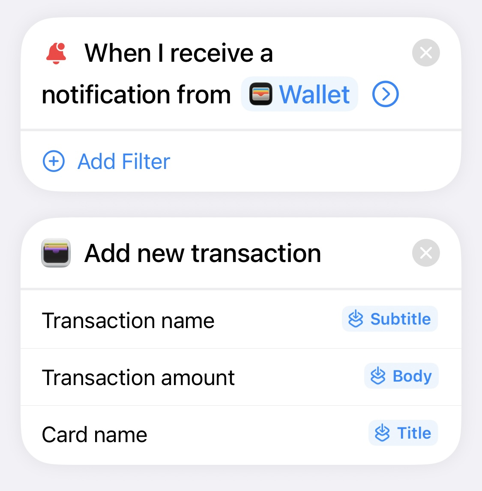

Create a new automation and choose Notification
Open Shortcuts, tap Automation, create a new automation, and select Notification as the trigger.
Apple Shortcuts notification trigger guide
In iOS27, Apple introduced a new shortcut automation trigger in the Shortcuts app called “notification”. This feature allows you to automatically execute any shortcut after receiving a notification from any app. While there are many use cases for this feature, this guide will be using notifications from Apple Wallet to automatically log your transactions into the WalletPal app.
Step-by-step
Follow the steps below to trigger a shortcut from an incoming notification, then pass the notification title, subtitle and body into WalletPal or another compatible app.
Open Shortcuts, tap Automation, create a new automation, and select Notification as the trigger.
Tap the App label and pick the app you want to listen to. In this example, Apple Wallet is the source app, so the shortcut will trigger when an Apple Wallet notification arrives.


Use the Search Actions box to find the app that will handle the notification data. In this tutorial, search for WalletPal and choose Add new transaction.

Configure each field so it uses the right part of the notification. For the WalletPal example: Transaction name uses Subtitle, Transaction amount uses Body, and Card name uses Title.

Once everything is mapped, tap Done and send a test notification. If the source app is correct and the fields are mapped properly, the shortcut should run and the data should land in the right place.
FAQ
If you are trying to figure out how to setup the apple shortcuts notification automation, these are the questions that usually come up first.
It runs a Shortcut when iPhone receives a notification from the app you selected, which makes it useful for lots of automations. In this guide, we use Apple Wallet notifications to log expenses in WalletPal.
You can pass the notification title, subtitle and body through Shortcut Input, then map each one to a different field in your app action.
That usually happens before the source app has been chosen. Select the app in the Notification trigger and the automation should become valid again.
Yes. WalletPal can be used as the action that receives the data, so Apple Wallet notification details can be mapped into a new expense without linking your bank account.
Related guide
Some people are looking for the notification trigger, while others want to log Apple Pay transactions. If that is the goal, read our separate step-by-step guide.
Apple Pay automation
Read the Apple Pay transaction automation tutorial and see how WalletPal can log Apple Pay spending automatically with Shortcuts.
WalletPal for iPhone
Download WalletPal, test the notification trigger, and use Shortcuts to pass notification title, subtitle and body into a workflow you actually want to keep.